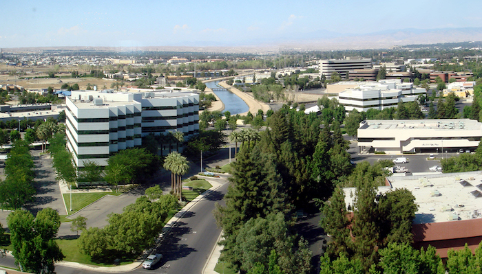
CSU Bakersfield
Bakersfield, CA
11,264 Total Students
375 Acre Suburban Campus
$5,318/Year After Aid
40% Graduation Rate - 78% Acceptance Rate
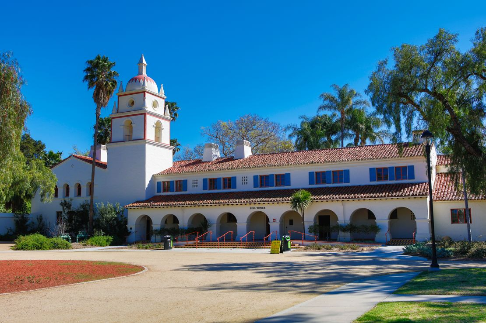
CSU Channel Islands
Camarillo, CA
6,943 Total Students
1,187 Acre Rural Campus
$14,000/Year After Aid
81% Graduation Rate - 79% Acceptance Rate
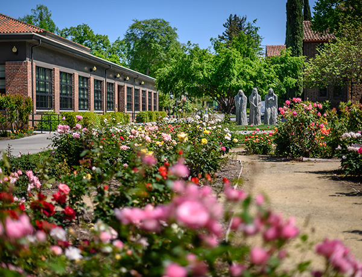
Chico State
Chico, CA
16,630 Total Students
3,249 Acre Small City Campus
$15,000/Year After Aid
66% Graduation Rate - 90% Acceptance Rate

CSU Dominguez Hills
Carson, CA
17,763 Total Students
346 Acre Urban Campus
$4,215/Year After Aid
74% Graduation Rate - 81% Acceptance Rate
Cal State East Bay
Hayward, CA
14,641 Total Students
200 Acre Suburban Campus
$11,000/Year After Aid
76% Graduation Rate - 73% Acceptance Rate
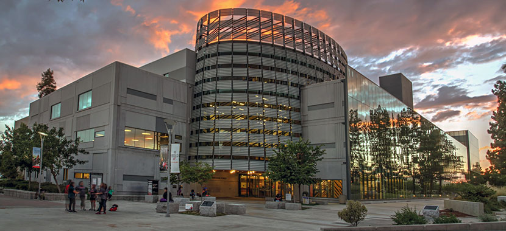
Fresno State
Fresno, CA
25,341 Total Students
388 Acre Suburban Campus
$5,464/Year After Aid
56% Graduation Rate - 90% Acceptance Rate
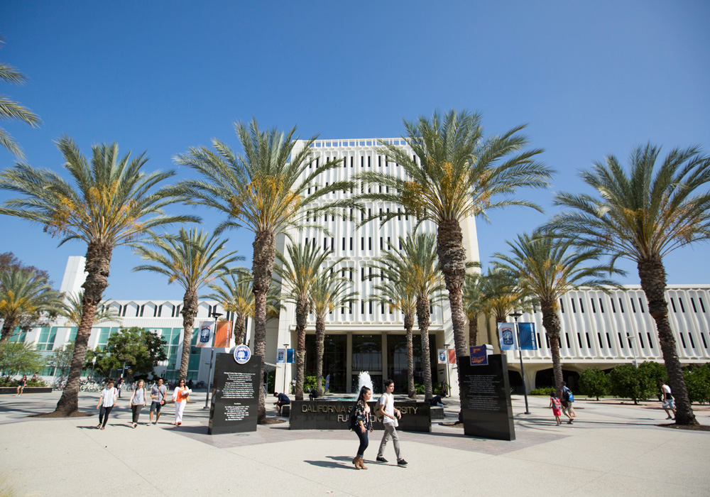
Cal State Fullerton
Fullerton, CA
41,408 Total Students
236 Acre Urban Campus
$7,991/Year After Aid
66% Graduation Rate - 68% Acceptance Rate
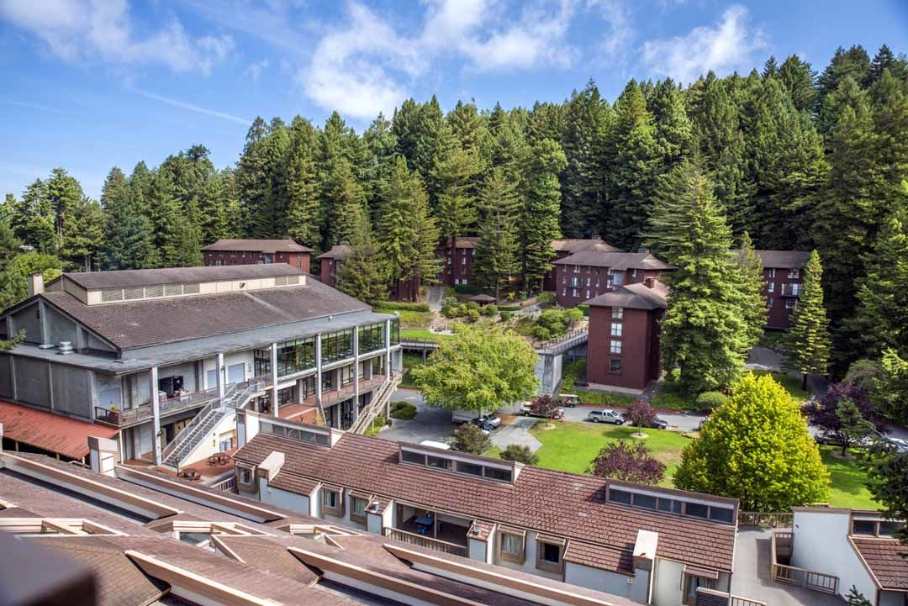
Humboldt State
Humboldt, CA
6,431 Total Students
733 Acre Rural Campus
$15,000/Year After Aid
46% Graduation Rate - 85% Acceptance Rate
Cal State LA
Los Angeles, CA
26,342 Total Students
733 Acre Rural Campus
$2,768/Year After Aid
47% Graduation Rate - 76% Acceptance Rate
Cal Maritime
Vallejo, CA
907 Total Students
92 Acre Campus
$21,000/Year After Aid
64% Graduation Rate - 82% Acceptance Rate
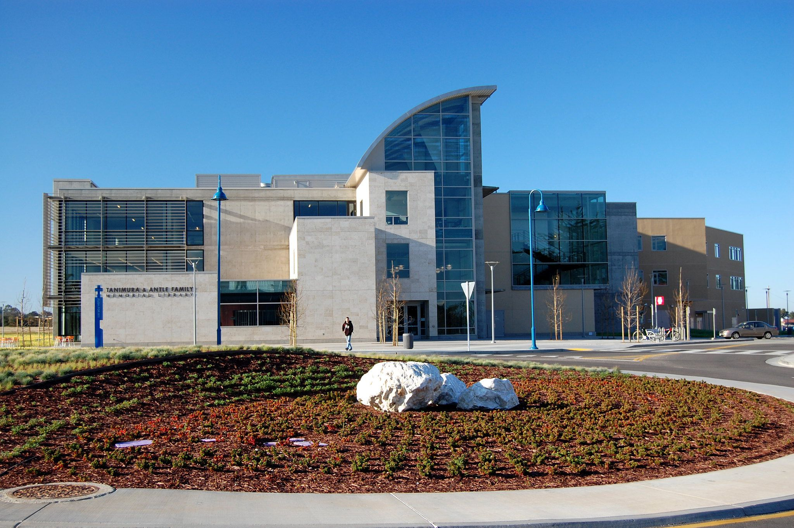
CSU Monterey Bay
Monterey Bay, CA
6,871 Total Students
1,350 Acre Campus
$12,000/Year After Aid
60% Graduation Rate - 86% Acceptance Rate
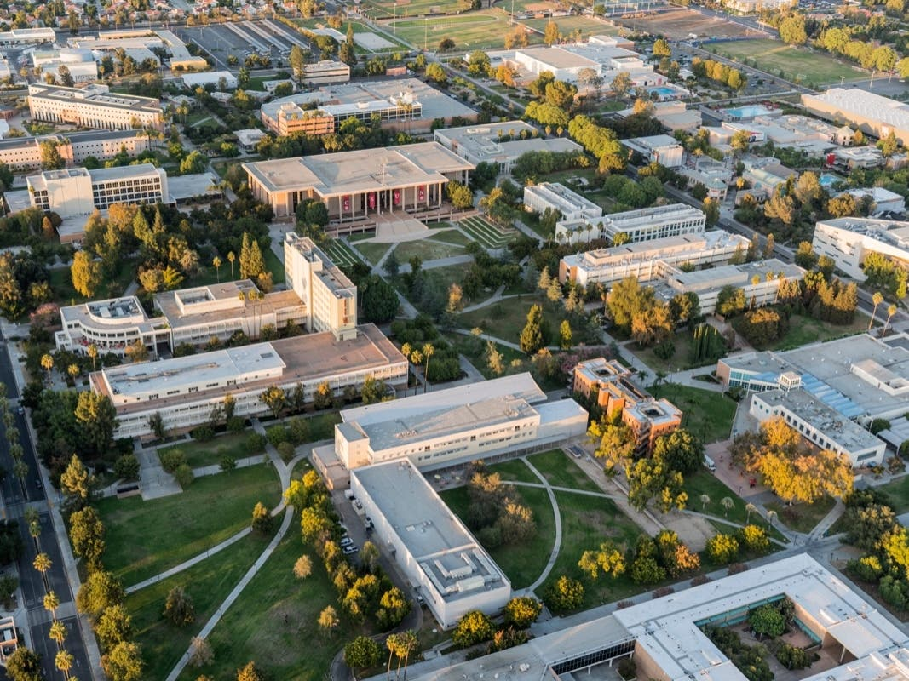
CSUN
Northridge, CA
38,551 Total Students
1,350 Acre Campus
$8,414/Year After Aid
51% Graduation Rate - 66% Acceptance Rate

Cal Poly Pomona
Pomona, CA
29,704 Total Students
1,438 Acre Suburban Campus
$13,000/Year After Aid
66% Graduation Rate - 65% Acceptance Rate
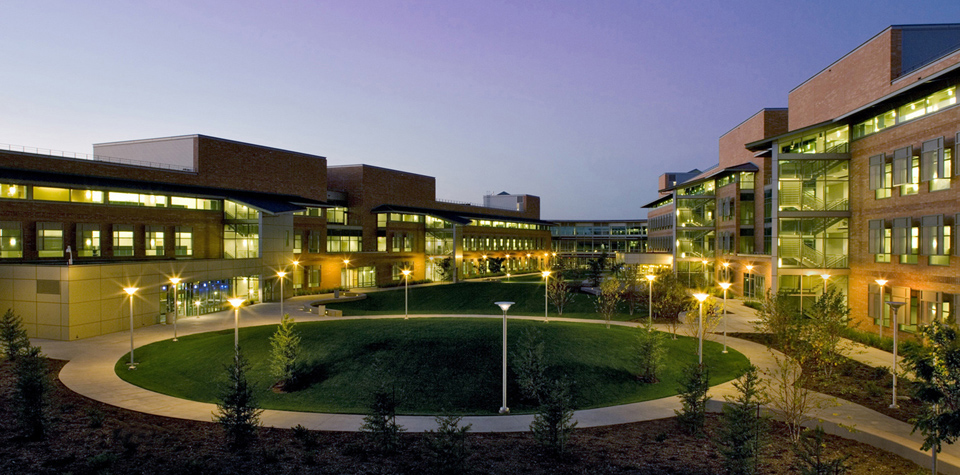
Sacramento State
Sacramento, CA
29,704 Total Students
305 Acre Urban Campus
$9,979/Year After Aid
78% Graduation Rate - 83% Acceptance Rate
Cal State San Bernardino
San Bernardino, CA
19,404 Total Students
441 Acre Urban Campus
$7,342/Year After Aid
76% Graduation Rate - 78% Acceptance Rate
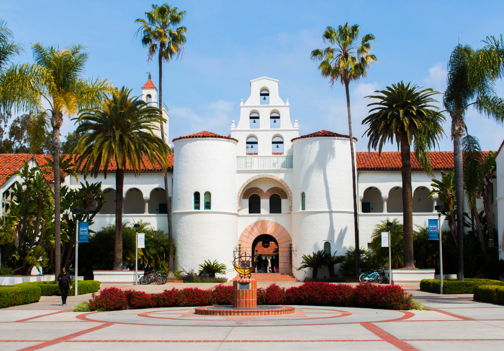
San Diego State
San Diego, CA
35,578 Total Students
283 Acre Urban Campus
$15,000/Year After Aid
74% Graduation Rate - 37% Acceptance Rate
San Francisco State
San Francisco, CA
26,628 Total Students
141.1 Acre Urban Campus
$15,000/Year After Aid
80% Graduation Rate - 84% Acceptance Rate
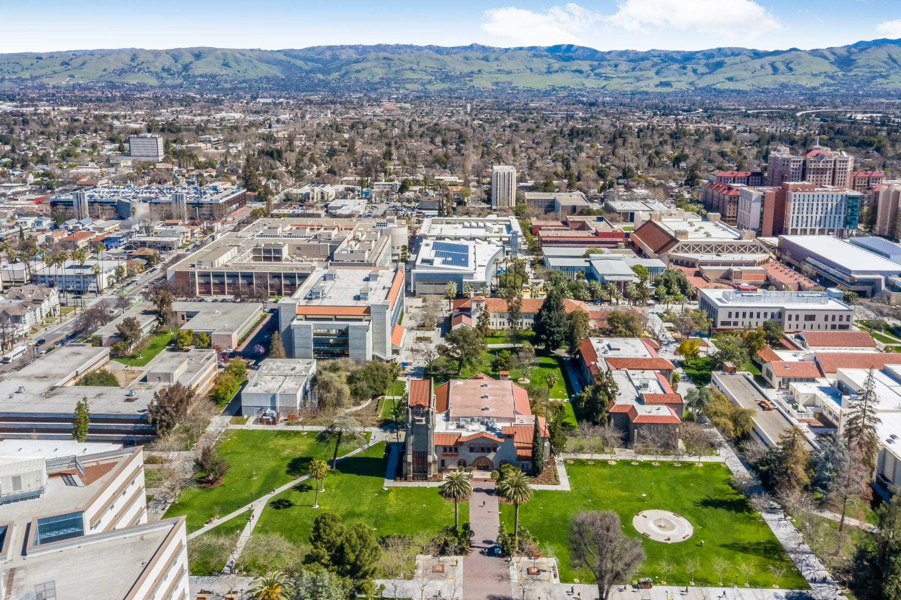
San José State
San José, CA
33,025 Total Students
154 Acre Urban Campus
$15,000/Year After Aid
57% Graduation Rate - 67% Acceptance Rate

Cal Poly San Luis Obispo
San Luis Obispo, CA
22,287 Total Students
9,678 Acre Rural Campus
$22,000/Year After Aid
82% Graduation Rate - 32% Acceptance Rate
CSU San Marcos
San Marcos, CA
14,643 Total Students
340 Acre Urban Campus
$15,000/Year After Aid
53% Graduation Rate - 79% Acceptance Rate
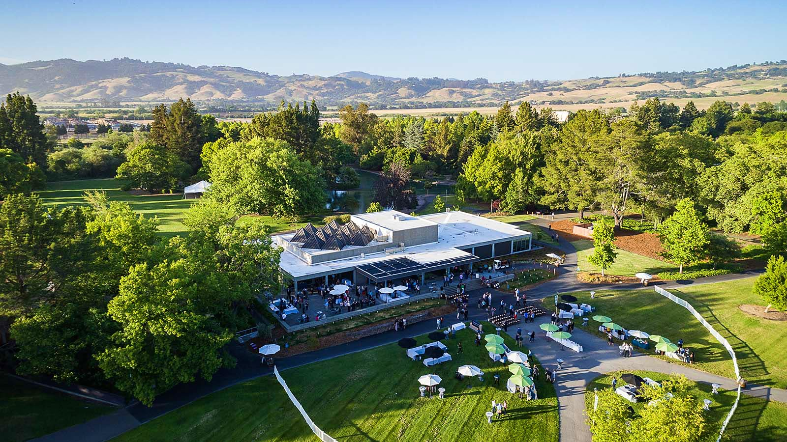
Sonoma State
Rohnert Park, CA
7,807 Total Students
269 Acre Suburban Campus
$17,000/Year After Aid
58% Graduation Rate - 89% Acceptance Rate
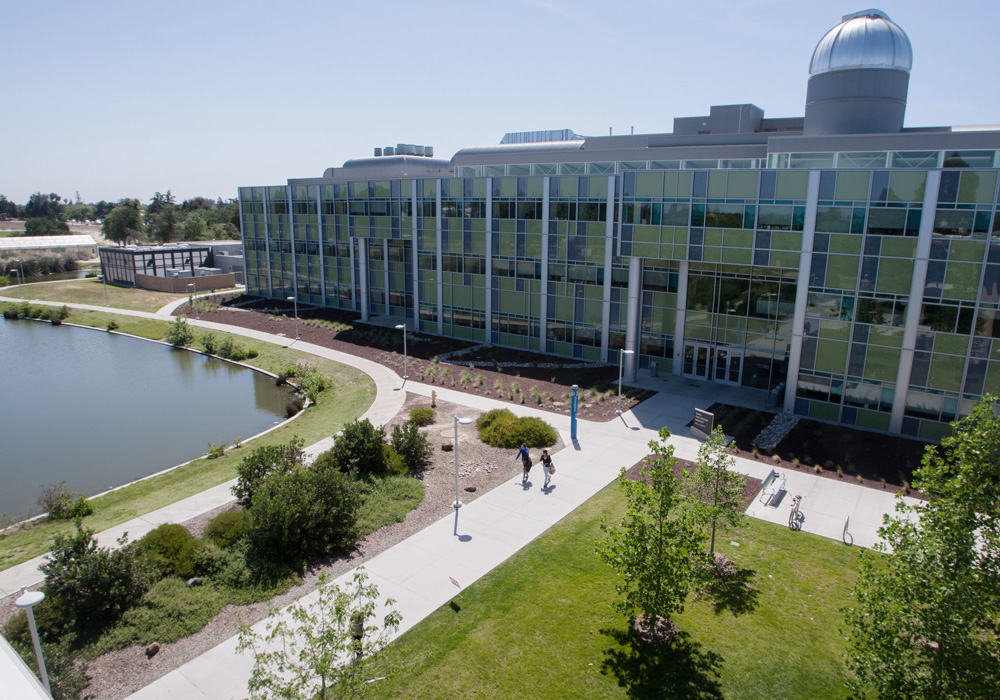
Stanislaus State
Turlock, CA
10,741 Total Students
228 Acre Suburban Campus
$6,019/Year After Aid
53% Graduation Rate - 89% Acceptance Rate